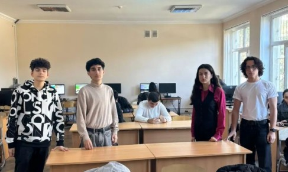
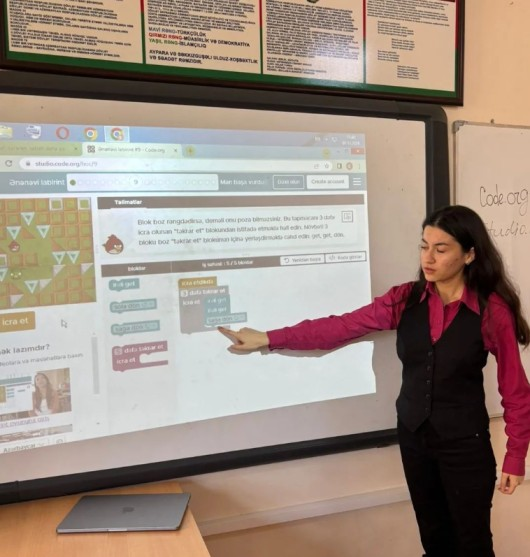
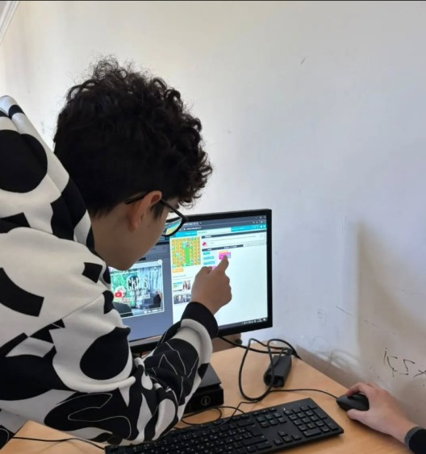
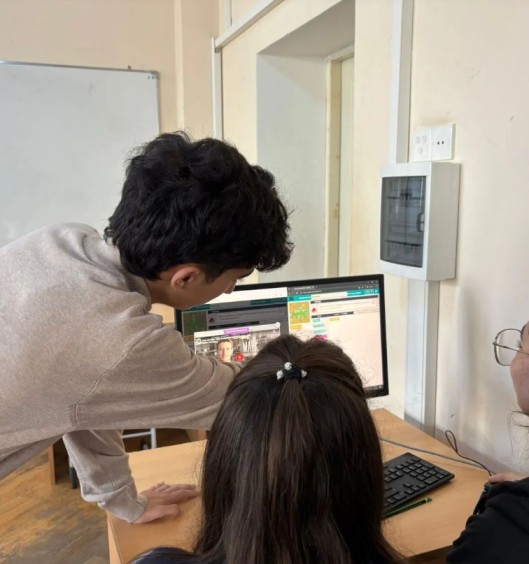
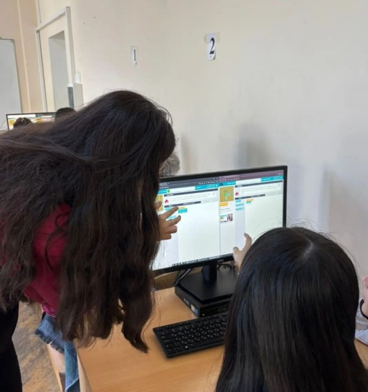

<!DOCTYPE html>

<html>
    <head>
        <title>Homework 3: Hour of Code event</title>
        <link rel="stylesheet" href="styles.css">  
        <script type="text/javascript" src="scripts.js"></script>      
    </head>
    <body>
    </body>
</html>

</html>

</html>
<html lang="en">
<head>
    <meta charset="UTF-8">
    <meta name="viewport" content="width=device-width, initial-scale=1.0">
    <title>Hour of Code</title>
    <link rel="stylesheet" href="styles/styles.css"> 
</head>
<body>
    <div class="video-container">
        <video id="bg-video" class="bg-video" autoplay muted loop>
            <source src="media/bg.mp4" type="video/mp4">
        </video>
    </div>
    <div class="content-container">

        <header>
            <h1>Hour of Code</h1>
            <nav>
                <ul>
                    <li><a href="index.html">Home</a></li>
                    <li><a href="team-members.html">Our Team</a></li>
                    <li><a href="web-project.html">Website Project</a></li>
                    <li><a href="code-artist.html">Code Art</a></li>
                </ul>
            </nav>
        </header>

        <main>
            <section>
                <h2>
                    The Hour of Code is an event held for children to learn the basics of coding through the entertaining platform Code.org, where they can understand programming while engaging with games. Moreover, the students who teach the basics of coding gain good experience and enhance their skills too.
                    The Hour of Code was held by our Team65 on November 7, in No.61 secondary school named after Kamil Aliyev, in Baku. The number of participants was 20, from 8th grade.
                    We provided information about our ADA University and then started teaching the basics of programming through a projector demonstrating some difficult puzzles. Further, we answered several questions and then individually helped participants when they had problems.
                    To sum up, participants demonstrated high interest and were happy that they learned something new and useful. After completing all puzzles, they received certificates.
                </h2>
                <div class="image-gallery">
                    <div class="single-image">
                        
                    </div>
                    <div class="multi-images">
                        
                        
                        
                        
                    </div>
                </div>
            </section>
        </main>
        
        
        <button id="toggle-mode" class="toggle-button">☼</button>

        <footer>
            <div class="social-links">
                <a href="https://www.instagram.com/team65_site1101/">
                    
                </a>
                <a href="https://www.youtube.com/@Team65-ADA">
                    
                </a>
            </div>
            <p>&copy; 2024 Team Website</p>
        </footer>
    </div>
    <script src="scripts.js"></script>
</body>
</html>
